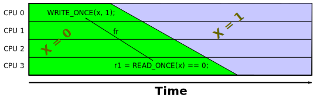

October 4, 2016
This article was contributed by Jade Alglave,
Paul E. McKenney, Alan Stern, Luc Maranget, and Andrea Parri
The from-read relation, abbreviated “fr”, seems
to be an acquired taste.
However, it is critically important to memory models, so it is therefore
also a critically important concept to fully understand.
The following gives descriptions, an example, and a formal definition
to help you better understand fr:
- Informal Descriptions.
- Example.
- Formal Definition.
- Temporal Consequences.
These sections are followed by a
Summary
and of course the everpresent
Answers to Quick Quizzes.
This document focuses solely on the fr relation.
More information on other aspects of herd may be found
here, with additional relations tabulated
here and
here,
and with operators and functions tabulated
here.
First, fr is a
relation,
or more specifically, a set of
ordered pairs.
In the case of fr, the first entry of each pair is always a read
and the second is always a write.
Thus, a given pair in a fr relation can be said to link
the read to the write.
The description in
the main article
may be paraphrased as follows:
fr is a
relation linking any given read to every write to the same
variable that executes too late to affect the value returned
by that read.
Another description is as follows:
fr is a relation linking a given read R
from a given variable x with all the writes to x
that overwrite the value read by R.
Key points include:
- fr always links from reads to writes.
- fr always links reads and writes to the same
variable, in other words, it never links reads from one variable
to writes to some other variable.
- fr is a one-to-many relation, possibly linking
a single read to multiple writes
(but, as noted earlier, all to the same variable).
- fr can be empty, for example, when each
read returns its variable's final value.
- fr never links to an initialization
“write”.
- Given a pair of reads R1 and R2 from the same
variable, if R1 reads from an earlier write than
does R2, then R1 will have the larger
number of pairs in the fr relation.
Quick Quiz 1:
Why can't fr link a read to an initialization “write”?
Answer
Given these descriptions, it is time to proceed to an example.
Our example is based on the following
litmus test:
Litmus Test #fr-1
1 C C-FR+w+w+w+reads.litmus
2
3 {
4 a=0;
5 }
6
7 P0(int *a)
8 {
9 WRITE_ONCE(*a, 1);
10 }
11
12 P1(int *a)
13 {
14 WRITE_ONCE(*a, 2);
15 }
16
17 P2(int *a)
18 {
19 WRITE_ONCE(*a, 3);
20 }
21
22 P3(int *a)
23 {
24 r1 = READ_ONCE(*a);
25 r2 = READ_ONCE(*a);
26 r3 = READ_ONCE(*a);
27 r4 = READ_ONCE(*a);
28 }
29
30 exists
31 (3:r1=0 /\ 3:r2=1 /\ 3:r3=2 /\ 3:r4=3)
Keeping in mind that initialization counts as a write, and focusing on
executions that satisfy the “exists” clause
on lines 30 and 31,
the read on line 24 (call it R1) reads the initial value
(call it W0),
line 25 (call it R2) reads the value written on line 9
(call it W1),
line 26 (call it R3) reads the value written on line 14
(call it W2), and
line 27 (call it R4) reads the value written on line 19
(call it W3).
The order of the writes is then W0, W1, W2,
and finally W3.
This means that the pairs in the fr relation linking from R1
are R1⟶W1, R1⟶W2, and
R1⟶W3.
Those from R2 are
R2⟶W2 and R2⟶W3.
There is but one from R3, namely R3⟶W3.
Finally, there are no fr pairs linking from R4
because it reads from the final write.
This example will help illustrate the following formal definition of
fr.
It turns out that there is a simple formal definition of
fr in terms of the more
intuitive rf and co relations.
But first, let's review those two relations:
- co = “coherence”, linking each write to
all later writes to that same variable.
Note that initialization is considered to be a “before the
beginning of time” write, so for each non-initialization
write by any process to a given variable, there is a co
pair linking from that variable's initialization to that write.
- rf = “reads from”, linking a given write to
each read that loads the value stored by that write.
In the
litmus test
above, the co relation contains the pairs
W0⟶W1,
W0⟶W2,
W0⟶W3,
W1⟶W2,
W1⟶W3, and
W2⟶W3.
The rf relation contains
W0⟶R1,
W1⟶R2,
W2⟶R3, and
W3⟶R4.
Next, we need to introduce the inverse of a relation,
which simply reverses each pair in that relation.
In herd, the inverse operator is a postfix “^-1”, so
that rf^-1 links each read to the write that supplied that
read's value.
In the
litmus test
above, rf^-1 contains
R1⟶W0,
R2⟶W1,
R3⟶W2, and
R4⟶W3.
Finally, we also need the concept of sequencing, which glues two
relations together to produce a third relation.
In herd, the sequencing operator is an infix “;”,
so that if relation A contains x⟶y and relation
B contains y⟶z, then the relation A;B
contains x⟶z.
These relations and operators permit fr to be expressed
formally as follows:
fr = rf^-1;co
In other words, given a read, go backwards to the
write that supplied that read's value, then go forward to any
later write to that same variable.
Then fr will link the read to the later write.
Quick Quiz 2:
But rf^-1 goes backwards in time!
How can real hardware possibly do that???
Answer
In the
litmus test
above, rf^-1 contains
R1⟶W0 and
co contains
W0⟶W1.
The rf^-1;co set of relations therefore contains
R1⟶W1, and much else besides.
Quick Quiz 3:
What is the full contents of fr for the
litmus test
above?
Answer
Quick Quiz 4:
Why the asymmetry between rf, which links each write
to only those reads returning the value written (but not later reads),
and fr, which links each read to all the writes
that were too late to affect the value read, rather than just the
earliest such write?
Answer
It can be seen that any read returning the initial value of its variable
will be fr-related to all writes to that variable.
Similarly, any read returning the final value of its variable will not
be fr-related to any writes at all.
It is important to understand that the fr relationship does not
imply any sort of temporal relationship.
Due to the finite speed with which information propagates through
real systems, it is possible for a read to get a value from a write
whose value is already destined to be overwritten, as shown below:

In this example, the read returned the initialization value of zero
despite the write of the value “1” having already executed.
However, this new value had not yet propagated from CPU 0 to
CPU 3, so this later read, being unaware of the new value, returned
the old one.
The fr relationship can therefore go backwards in time, not due
to any sort of computing-system time machine, but rather due to the finite
speed at which updates propagate through the computer system.
This document has attempted to illuminate fr with a couple of
descriptions, an example, and a formal definition.
It is worth repeating the list of fr's properties:
- fr always links from reads to writes.
- fr always links reads and writes to the same
variable, in other words, it never links reads from one variable
to writes to some other variable.
- fr is a one-to-many relation, possibly linking
a single read to multiple later writes
(but, as noted earlier, all to the same variable).
- fr can be empty, for example, when each
read returns its variable's final value.
- fr never links to an initialization
“write”.
- Given a pair of reads R1 and R2 from the same
variable, if R1 reads from an earlier write than
does R2, then R1 will have the larger
number of pairs in the fr relation.
Again,
fr is often an acquired taste, but it is critically
important to memory models.
We hope that this document helped you to better understand
fr!
Quick Quiz 1:
Why can't fr link a read to an initialization “write”?
Answer:
Suppose that it did.
That would mean that the read returned some value prior to the
initialization “write”.
Just what value could that possibly be?
The answer to this last question if of course “There is no such
value!”
Therefore, fr cannot possibly link a read to an
initialization “write”.
Back to Quick Quiz 1.
Quick Quiz 2:
But rf^-1 goes backwards in time!
How can real hardware possibly do that???
Answer:
Real hardware really can respect fr=rf^-1;co, and without requiring
a time machine to do so.
First, in a mythical system having a total temporal and causal order
over all memory references, co must necessarily move farther
forward in time than rf^-1 moves backwards.
Therefore, on such a system, fr relations will always
move forward in time.
Second, in weakly ordered systems, propagation delay accounts for
apparent time reversals.
For example, in the earlier
litmus test,
suppose that all three writes take place concurrently at time t=0.
Now, the finite speed of light and the atomic nature of matter means
that these three writes cannot be seen instantaneously across the
whole system.
It will instead take time for these writes to propagate.
Suppose that news of W1 arrives at P3() at t=1,
W2 at t=2, and W3 at t=3.
Then the R3⟶W3 relation extends “backwards in
time” from t=2 to t=0.
But no time machine was required: The apparent time reversal
was instead an artifact of propagation delay.
Back to Quick Quiz 2.
Quick Quiz 3:
What is the full contents of fr for the
litmus test
above?
Answer:
The fr=rf^-1;co relation contains
R1⟶W1,
R1⟶W2,
R1⟶W3,
R2⟶W2,
R2⟶W3, and
R3⟶W3.
Back to Quick Quiz 3.
Quick Quiz 4:
Why the asymmetry between rf, which links each write
to only those reads returning the value written (but not later reads),
and fr, which links each read to all the writes
that were too late to affect the value read, rather than just the
earliest such write?
Answer:
Either way, there is an asymmetry.
For example, if fr related each read only to the first too-late write,
then rf would be one-to-many and fr would not be.
Some readers might be interested in producing a simple
cat expression for a set of relations
that resembles rf, but included later reads, as well as a
simple expression for a set of relations that resembles fr, but
includes only the first too-late write.
Back to Quick Quiz 4.